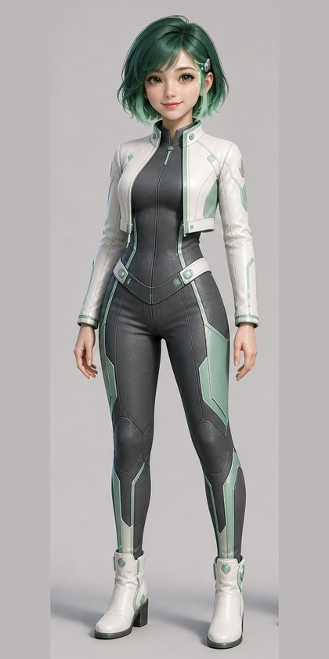

Point her at a repository. She works out whether there is an agent in it, assesses it across nine axes, and tells you what she measured and what she did not.
Create an organizationWorks with any public GitHub repository. Paste a link and she reports what she found.

What she does
Who she is
An abstention costs one exchange. A wrong route spends your money on work you did not ask for — and a conversation is exactly where you are least equipped to notice.
“I cannot route that.”
“Nothing was spent.”
“Give the run a limit.”
Three things she says, verbatim.
Getting started